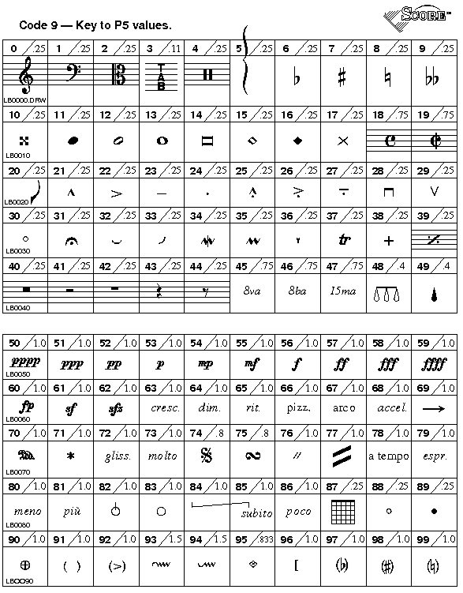
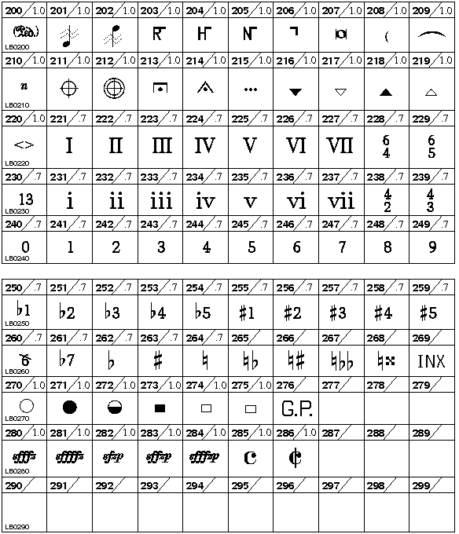
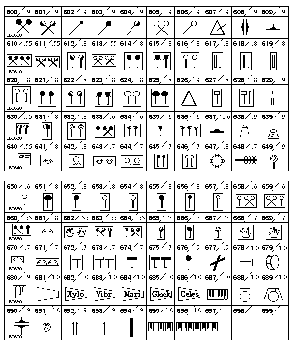
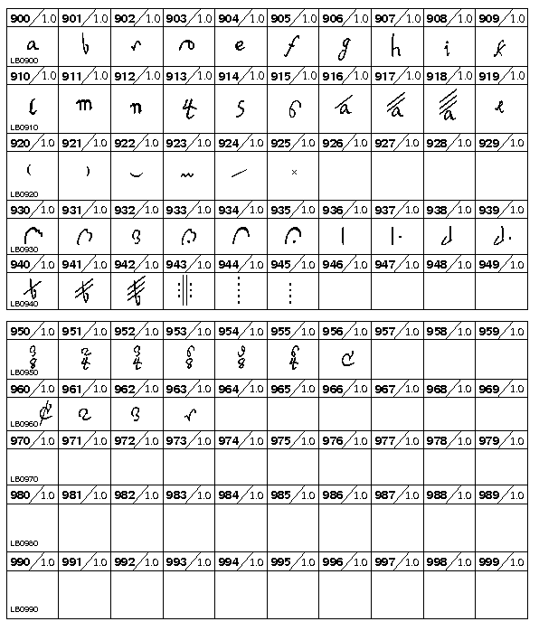
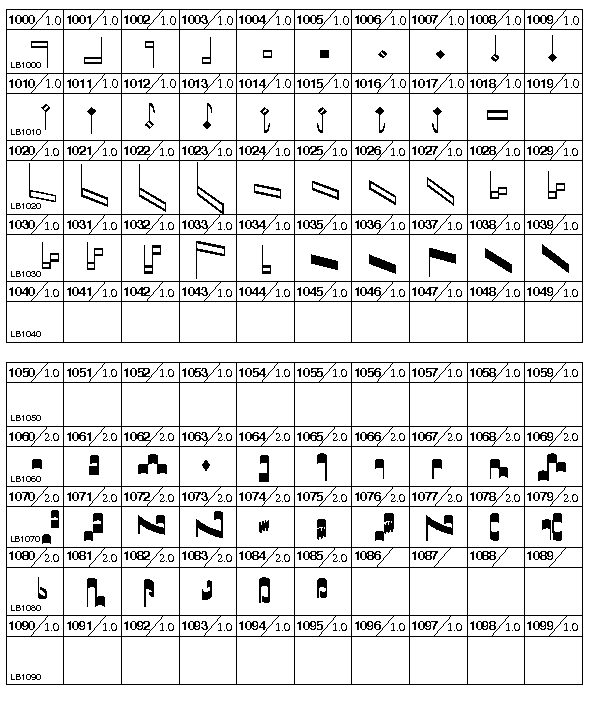
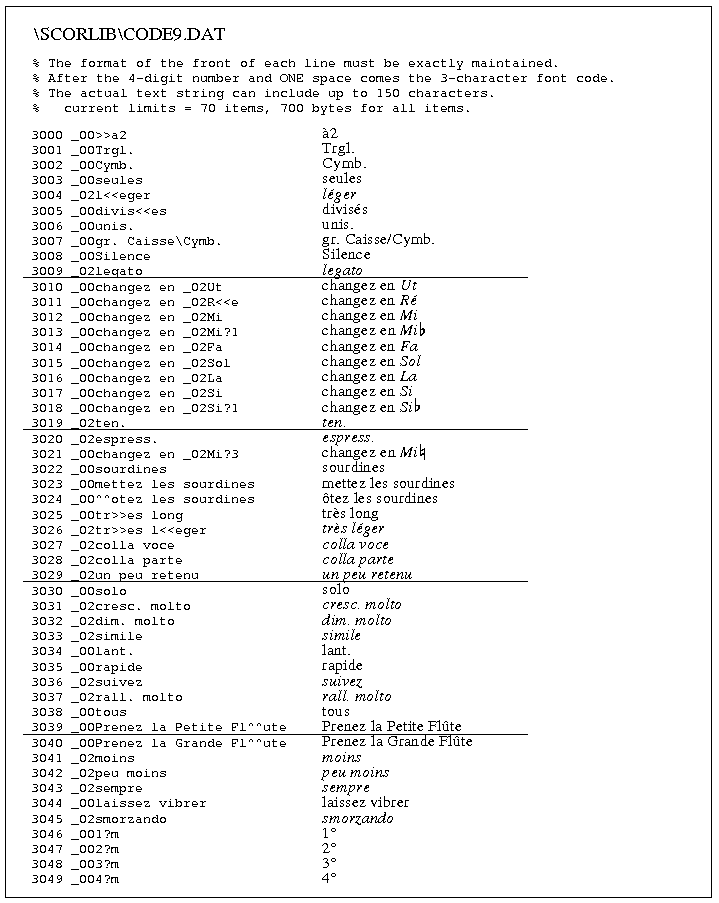
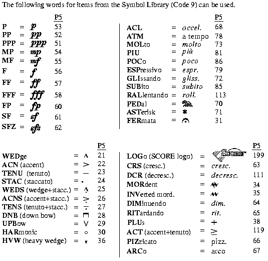

Code 9 -- Symbol Library -- parameter structure |
P1 code number (9)
P2 staff number
P3 horizontal position
P4 vertical position
P5 symbol items
P6 size factor
P7 vertical size factor
P8 thickness
P9 rotation
P10 pixel thickness
P15 horizontal offset
P25
P26
P5 (The decimal numbers indicate the normal size factors.)

   
Special Edit Commands: Code 9 - Terms Library
It is possible to create special libraries of musical terms that may be needed for each individual SCORE publishing project. The library entries are made up of any valid SCORE text strings. The total number of items cannot exceed 70 for any single library and the total number of characters needed for all the library items cannot exceed 700. Thus, if you created 70 items, the average length of the strings would be limited to 10 characters, including type font information. The library items are accessed by the P5 numbers from 3000 to 3069. The default name for the library file is CODE9.DAT and its default location is in the \\SCORLIB directory. However, you may use any names for these files and they may reside in any directory. The designation of particular Code 9 data files is managed through changes in the SCORE Preference list. See further about the way to change preferences.
The format of the CODE9.DAT file must be strictly adhered to.
Following is a printout of the CODE9.DAT file. You may change the entries in the file in any way you see fit.

P6 = size factor.
P6 controls both the horizontal and vertical size factors so long as P7 remains at zero. P6 and P7 may have negative values if the item is to be reversed or inverted.
***** If 100 is added to P6's size value, the part extractor feature
will put the item in all player's parts.
***** P6+200 makes all parts ignore this item.
***** P6+300 = use this item in all parts and change size to 1.
The size of Code 9 items is always dependent on the size of the staff to which the item is attached.
P8 = thickness.
P8 will not affect most text items in the P5 symbol table.
P8 is a three-digit number, X0Y, where X controls the vertical thickness and
Y controls the horizontal thickness. The middle digit is zero.
If P8 = -1 the item will appear as an outline only. This parameter is rarely used.
P9 = rotation.
Rotation is clockwise in degrees. Negative numbers produce counterclockwise rotation.
P10 = pixel thickness.
P15 = horizontal offset, plus or minus.
P25 layer number.
See Color Control.
P26 color/gray value.
See Color Control.
----- Shortcut Letter Commands -------------------------- 
Many Code 9 items may be entered directly by letter commands.
ROT+, ROT- = rotate number +/- 10 degrees. (P9)
ROT0 = no rotation. (P9 = 0)
SZ+, SZ- = increase/decrease size. (P6)
SZ0 = basic size. (P6 = 0)
CN n = center on nearest note/rest on staff n. (P3)
>>> Offsets
OFM = offset minus, moves item .5 step to left. (P15)
OFP = offset plus, moves item .5 step to right.
NOF = no offset of item -- P15 = 0.
___________________________________________________________________________
Function Key Setup for Code 9
| F1 Help |
F2 Back to Previous Item |
F3 Forward to Next Item |
F4 Back to Previous Item, Same Code # |
F5 Forward to Next Item, Same Code # |
F6 . . . |
| F7 Flip |
F8 Center |
F9 Exit from Edit Mode ( X ) |
F10 . . . |
F11 Delete, Move to Previous, Same Code # |
F12 Delete, Move to Next, Same Code # |